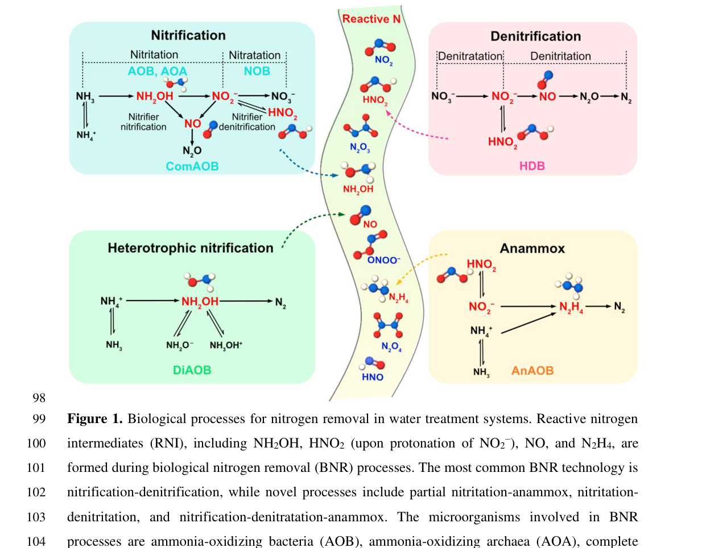

AJ80_06654 encodes a predicted copper-containing nitrite reductase in the fungus Polytolypa hystricis UAMH7299. The protein belongs to the multicopper oxidase/cupredoxin nitrite reductase family and is predicted to catalyze NO-forming nitrite reduction; direct AJ80_06654/A0A2B7XTR7 literature was not recovered, so pathway and compartment claims remain cautious.
| GO Term | Evidence | Action | Reason |
|---|---|---|---|
|
GO:0005507
copper ion binding
|
IEA
GO_REF:0000002 |
ACCEPT |
Summary: ACCEPT. Copper binding is consistent with the predicted copper-containing nitrite reductase family.
Reason: The UniProt record includes cupredoxin/multicopper oxidase family signatures and conserved type 1 copper-site features. These support copper binding even though no species-specific biochemical study was found. Falcon supports T1Cu/T2Cu architecture as the conserved CuNIR mechanism.
Supporting Evidence:
file:POLH7/AJ80_06654/AJ80_06654-uniprot.txt
Belongs to the multicopper oxidase family.
file:POLH7/AJ80_06654/AJ80_06654-uniprot.txt
InterPro; IPR001287; NO2-reductase_Cu.
file:POLH7/AJ80_06654/AJ80_06654-deep-research-falcon.md
CuNIR/NirK family enzymes use a T1Cu electron-transfer site and T2Cu catalytic nitrite-binding site; no AJ80_06654-specific metal analysis was recovered.
|
|
GO:0016491
oxidoreductase activity
|
IEA
GO_REF:0000118 |
KEEP AS NON CORE |
Summary: KEEP_AS_NON_CORE. Correct but less informative than NO-forming nitrite reductase activity.
Reason: The oxidoreductase parent is consistent with nitrite reductase chemistry, but GO:0050421 is the informative function supported by the EC and family assignments.
Supporting Evidence:
file:POLH7/AJ80_06654/AJ80_06654-uniprot.txt
RecName: Full=Copper-containing nitrite reductase; EC=1.7.2.1.
|
|
GO:0042597
periplasmic space
|
IEA
GO_REF:0000044 |
UNDECIDED |
Summary: UNDECIDED. This bacterial-style localization should not be accepted for a fungal protein without stronger subcellular evidence.
Reason: The sequence has a UniProt periplasm prediction but the gene is fungal, and the local evidence does not establish whether this protein is secreted, cell-wall/periplasm-associated, or membrane-associated. The predicted transmembrane segment further argues against accepting a simple bacterial-style periplasm transfer without organism-specific evidence. Falcon confirms that bacterial CuNIRs are commonly periplasmic but that this compartment does not translate cleanly to a filamentous fungus.
Supporting Evidence:
file:POLH7/AJ80_06654/AJ80_06654-uniprot.txt
SUBCELLULAR LOCATION: Periplasm.
file:POLH7/AJ80_06654/AJ80_06654-uniprot.txt
TRANSMEM 82..98
file:POLH7/AJ80_06654/AJ80_06654-deep-research-falcon.md
No AJ80_06654/A0A2B7XTR7-specific paper was recovered; the report treats fungal localization as unresolved rather than accepting a bacterial periplasm term by transfer.
|
|
GO:0050421
nitrite reductase (NO-forming) activity
|
IEA
GO_REF:0000120 |
ACCEPT |
Summary: ACCEPT. The predicted copper-containing nitrite reductase assignment supports this molecular function.
Reason: The best-supported assertion is molecular activity, not organism-level pathway membership. UniProt assigns EC 1.7.2.1 and the sequence carries NO2-reductase_Cu/cupredoxin family signatures, making this a reasonable conserved-function inference. PTHR11709 is a broad multicopper oxidase family, so the specific nitrite reductase call should rely on the EC and NO2-reductase_Cu evidence rather than PANTHER root membership alone. Falcon adds current CuNIR mechanism: T1Cu transfers electrons to the T2Cu nitrite-binding catalytic site for NO formation.
Supporting Evidence:
file:POLH7/AJ80_06654/AJ80_06654-uniprot.txt
RecName: Full=Copper-containing nitrite reductase; EC=1.7.2.1.
file:POLH7/AJ80_06654/AJ80_06654-uniprot.txt
PANTHER; PTHR11709; MULTI-COPPER OXIDASE.
file:interpro/panther/PTHR11709/PTHR11709-deep-research-falcon.md
PTHR11709 family research found multicopper oxidases are functionally diverse; substrate-specific activities should not be propagated from the broad family root without specific clade or EC evidence.
file:POLH7/AJ80_06654/AJ80_06654-deep-research-falcon.md
CuNIR/NirK family evidence supports nitrite + electron + protons to NO + water at a T2Cu catalytic site, with electron entry through T1Cu; no species-specific assay was recovered for AJ80_06654.
|
|
GO:0019333
denitrification pathway
|
IEA
GO_REF:0000041 |
UNDECIDED |
Summary: UNDECIDED. A NO-forming nitrite reductase can participate in denitrification, but this is a singleton fungal UniPathway row and no organism-specific experimental support was available in the local review.
Reason: Conserved NO-forming nitrite reductase activity supports possible denitrification chemistry, but the review lacks species-specific evidence that P. hystricis runs a complete denitrification pathway or that this fungal protein functions in that pathway in vivo. Keep the molecular function, but leave the pathway assertion unresolved. Falcon found broad fungal nirK ecological evidence, but not direct P. hystricis pathway evidence.
Supporting Evidence:
file:POLH7/AJ80_06654/AJ80_06654-uniprot.txt
PATHWAY: Nitrogen metabolism; nitrate reduction (denitrification); dinitrogen from nitrate: step 2/4.
file:POLH7/AJ80_06654/AJ80_06654-uniprot.txt
RecName: Full=Copper-containing nitrite reductase; EC=1.7.2.1.
file:interpro/panther/PTHR11709/PTHR11709-deep-research-falcon.md
The broad multicopper oxidase family includes divergent fungal and bacterial lineages, supporting caution for pathway-level propagation in a singleton fungal UniPathway row.
file:POLH7/AJ80_06654/AJ80_06654-deep-research-falcon.md
The report found no peer-reviewed source explicitly mentioning AJ80_06654/A0A2B7XTR7 and no organism-specific evidence that P. hystricis expresses a complete denitrification pathway.
|
The research report should be a detailed narrative explaining the function, biological processes, and localization of the gene product. Citations should be given for all claims.
You should prioritize authoritative reviews and primary scientific literature when conducting research. You can supplement
this with annotations you find in gene/protein databases, but these can be outdated or inaccurate.
We are specifically interested in the primary function of the gene - for enzymes, what reaction is catalyzed, and what is the substrate specificity? For transporters, what is the substrate? For structural proteins or adapters, what is the broader structural role? For signaling molecules, what is the role in the pathway.
We are interested in where in or outside the cell the gene product carries out its function.
We are also interested in the signaling or biochemical pathways in which the gene functions. We are less interested in broad pleiotropic effects, except where these elucidate the precise role.
Include evidence where possible. We are interested in both experimental evidence as well as inference from structure, evolution, or bioinformatic analysis. Precise studies should be prioritized over high-throughput, where available.
AJ80_06654 (UniProt A0A2B7XTR7) is annotated (UniProt) as a copper-containing nitrite reductase (CuNIR; NirK; EC 1.7.2.1), a multicopper oxidase-family enzyme whose primary, conserved role is nitrite (NO2−) reduction to nitric oxide (NO) as part of denitrification-associated nitrogen metabolism. Direct experimental literature for this exact P. hystricis protein could not be retrieved in the available corpus; therefore, conclusions about biochemical function, cofactors, and pathway roles are primarily inferred from authoritative CuNIR/NirK literature, with recent mechanistic advances from 2023–2024 structural work and 2024 review synthesis. (su2024formationandfate pages 14-18, rose2023spectroscopicallyvalidatedmultiple pages 1-3)
The requested gene symbol AJ80_06654 is consistent with a UniProt-annotated ORF name for accession A0A2B7XTR7, described as copper-containing nitrite reductase (Cu-NIR), EC 1.7.2.1, belonging to the multicopper oxidase family and containing Cu-oxidase/cupredoxin/NO2-reductase_Cu domains (as supplied in the prompt). The functional description aligns with canonical NirK/CuNIR biochemistry summarized in recent reviews (nitrite → NO; copper T1/T2 centers; trimeric enzyme). (su2024formationandfate pages 14-18)
No peer-reviewed paper in the retrieved set explicitly mentions AJ80_06654 or A0A2B7XTR7. A genome-scale study including P. hystricis UAMH7299 was retrieved, but the scanned text did not provide usable evidence about this gene or denitrification capability. Consequently, organism-specific claims (e.g., expression conditions, cellular compartment in fungus, physiological role in P. hystricis) remain uncertain and are presented as hypotheses based on enzyme family knowledge. (su2024formationandfate pages 14-18)
CuNIRs (encoded by nirK in many prokaryotes) are enzymes that catalyze the NO-forming nitrite reduction step in denitrification and related nitrogen transformations. The canonical overall reaction is:
NO2− + e− + 2H+ → NO + H2O
This reaction is explicitly stated in a 2024 Environmental Science & Technology review (focused on reactive nitrogen in biological nitrogen removal systems) and reiterated in other nitrogen-cycle sources in the retrieved corpus. (su2024formationandfate pages 14-18, laidin2024evaluatinghydrogenotrophicand pages 20-24)
A widely used structural description of CuNIR is a homotrimeric enzyme containing two functionally distinct copper sites per monomer:
- Type 1 copper (T1Cu): electron-accepting/redox site.
- Type 2 copper (T2Cu): catalytic site where nitrite binds and is reduced to NO.
This two-site architecture and trimeric organization are summarized in the 2024 review. (su2024formationandfate pages 14-18)
Given its UniProt annotation and domain/family context, AJ80_06654 is best annotated as catalyzing nitrite reduction to NO, with nitrite as the primary substrate and NO + H2O as products. Nitrite binding at the catalytic copper site is supported by recent structural studies, which report side-on nitrite binding at the T2Cu site across pH conditions (pH 5.5 and pH 8). (su2024formationandfate pages 14-18, rose2023spectroscopicallyvalidatedmultiple pages 3-5)
Recent and authoritative sources converge on CuNIR requiring copper centers with division of labor between electron entry (T1Cu) and catalysis (T2Cu). A 2023 MSOX/XFEL study provides copper-site coordination detail: T1Cu is coordinated by four residues, and T2Cu by three histidines, and the enzyme’s inter-copper electron transfer is described as proton-coupled electron transfer (PCET). (rose2023spectroscopicallyvalidatedmultiple pages 1-3)
In bacteria (especially Gram-negative model denitrifiers), CuNIR is commonly described as a periplasmic enzyme. This is stated directly in the 2024 Environmental Science & Technology review. (su2024formationandfate pages 14-18)
Because P. hystricis is a filamentous fungus, the bacterial term “periplasmic” does not translate directly. Without organism-specific experimental evidence, the safest statement is:
- AJ80_06654 is a CuNIR-family enzyme whose closest-characterized homologs act in an extracytosolic/respiratory interface compartment in bacteria.
- The precise fungal compartment (secretory pathway/periplasm-equivalent/cell wall–associated vs intracellular) cannot be concluded from the retrieved literature. (su2024formationandfate pages 14-18, laidin2024evaluatinghydrogenotrophicand pages 24-27)
CuNIR/NirK is a key enzyme in denitrification-associated metabolism because it produces NO, which is both a reactive intermediate and a substrate for downstream steps (NO reduction and N2O formation/reduction). The 2024 review explicitly places CuNIR (nirK) in canonical denitrification and notes its central role in nitrifier denitrification (e.g., ammonia-oxidizing bacteria). (su2024formationandfate pages 14-18)
The 2024 review also emphasizes that nirK/CuNIR genes are found beyond classic denitrifiers, including in nitrifiers and archaeal lineages, with proposed pathways involving NO/NO2− cycling. In marine ammonia-oxidizing archaea, the review cites isotope tracing indicating that 63% of oxygen atoms in produced nitrite derive from H2O vs 37% from O2, supporting mechanistic models involving NO/NO2− interconversion. (su2024formationandfate pages 14-18)
A representative figure from the 2024 Environmental Science & Technology review illustrates biological nitrogen conversion processes and highlights where reactive nitrogen intermediates (including nitrite/NO) arise and are consumed, including CuNIR/nirK involvement. (su2024formationandfate media e47d02e2, su2024formationandfate media e4a3dff4)
A 2023 crystallography/spectroscopy study used MSOX serial crystallography and XFEL to obtain spectroscopically validated structural “movies” of CuNIRs across pH, yielding several mechanistic insights:
- CuNIR electron transfer from T1Cu to T2Cu is PCET via a Cys–His bridge and requires protons from key catalytic residues (including a catalytic His and Asp). (rose2023spectroscopicallyvalidatedmultiple pages 1-3)
- The enzyme shows a bell-shaped pH activity profile with an activity maximum around pH ~6.6–8. (rose2023spectroscopicallyvalidatedmultiple pages 1-3)
- At pH 8 (more proton-limited), NO formation is delayed relative to low pH, and the study links diminished catalysis to catalytic Asp decarboxylation and CO2 trapping under irradiation conditions used to probe states. (rose2023spectroscopicallyvalidatedmultiple pages 1-3, rose2023spectroscopicallyvalidatedmultiple pages 9-11)
- Quantitative structural data were reported for T2Cu–nitrite coordination distances (Å-scale) and small pH-dependent copper displacements (~0.08–0.16 Å), supporting the conclusion that high-pH loss of activity is not simply due to weaker nitrite binding. (rose2023spectroscopicallyvalidatedmultiple pages 3-5)
These insights are directly relevant to functional annotation because they reinforce that CuNIR activity depends strongly on proton availability and conserved catalytic residues, which can inform hypotheses about P. hystricis AJ80_06654 behavior under different environmental pH and redox regimes. (rose2023spectroscopicallyvalidatedmultiple pages 1-3, rose2023spectroscopicallyvalidatedmultiple pages 3-5)
A 2024 Environmental Science & Technology review argues that reactive intermediates such as NO2−/HNO2 and NO are “often ignored” chemical aspects affecting biological nitrogen removal performance. It highlights CuNIR (nirK) as a key biological generator/consumer node for these intermediates, and that environmental conditions (e.g., pH, redox transitions, substrate availability) can create transient accumulation of reactive nitrogen. (su2024formationandfate pages 14-18)
CuNIR/NirK function is operationally important in biological nitrogen removal (BNR) because nitrite-to-NO conversion feeds downstream denitrification steps and intersects with abiotic/biotic formation of reactive nitrogen species that influence N2O emissions and micropollutant transformations. (su2024formationandfate pages 14-18)
nirK abundance is widely used as a functional marker for NO-forming nitrite reduction potential in environmental microbiomes. In agricultural soils, the abundance of denitrification genes (including nirK) has been used to infer N2O emission potential (example: gene copy abundance assessment approaches in soils). (laidin2024evaluatinghydrogenotrophicand pages 20-24)
The 2024 Environmental Science & Technology review (Smets group and collaborators) provides an expert synthesis that CuNIR (nirK) is central not only in canonical denitrification but also in broader nitrogen-converting guilds, and that chemical fates of intermediates (NO2−/HNO2, NO) strongly shape system outcomes in engineered environments. This perspective supports annotating AJ80_06654 primarily as a nitrite-to-NO reductase with potential broader impacts via reactive nitrogen chemistry. (su2024formationandfate pages 14-18)
The 2023 MSOX/XFEL work offers authoritative mechanistic framing of CuNIR catalysis as PCET-controlled, emphasizing how pH and proton pathways regulate intramolecular electron transfer and substrate turnover. This supports annotating AJ80_06654 as an enzyme whose catalytic competence depends on conserved proton/electron transfer architecture common to CuNIRs. (rose2023spectroscopicallyvalidatedmultiple pages 1-3)
The 2023 MSOX/XFEL study reported:
- activity peak in the approximate range pH 6.6–8 (bell-shaped profile) (rose2023spectroscopicallyvalidatedmultiple pages 1-3)
- T2Cu–nitrite coordination distances in the ~1.83–2.25 Å range for different atoms/positions across datasets (rose2023spectroscopicallyvalidatedmultiple pages 3-5)
- small pH-dependent Cu displacements of roughly 0.08–0.16 Å (rose2023spectroscopicallyvalidatedmultiple pages 3-5)
A retrieved denitrification-systems source reports a formal potential for the nitrite-to-NO reduction step of Eo′ ≈ +0.350 V vs SHE. A compiled redox-potential table in another retrieved review lists +0.39 V at pH 7 for nitrite reduction (contextual rather than AJ80_06654-specific). (laidin2024evaluatinghydrogenotrophicand pages 20-24, maiti2025nitrate–nitriteinterplayin pages 3-4)
While not specific to P. hystricis, Xu et al. provide quantitative evidence that nirK-containing fungi can be major contributors to N2O emissions in soils:
- Sequencing depth: 1,622,131 reads; final OTU set: 1007 OTUs after filtering (xu2019characterizationoffungal pages 4-5)
- Taxonomic resolution: ~57.30% of OTUs unclassified; dominant assigned order Hypocreales ~40.51% (xu2019characterizationoffungal pages 1-2)
- Core community: ~53% of OTUs shared across soil types, representing ~98% of total relative abundance (xu2019characterizationoffungal pages 1-2, xu2019characterizationoffungal pages 5-7)
- Fungal nirK abundance: up to 3.15 × 10^9 copies g−1 soil in one soil type; fungal contribution to N2O emission estimated as 66.17%, 53.34%, and ~18.62% across three soil types (xu2019characterizationoffungal pages 4-5)
- Reported relationships: fungal nirK abundance was positively correlated with fungal N2O emission contribution (P < 0.05) (xu2019characterizationoffungal pages 5-7, xu2019characterizationoffungal pages 4-5)
These data support the ecological plausibility that a fungal CuNIR such as AJ80_06654 could participate in nitrite-to-NO steps that influence N2O outcomes, though they do not establish that P. hystricis expresses this gene in situ. (xu2019characterizationoffungal pages 5-7, xu2019characterizationoffungal pages 4-5)
The following table consolidates the most defensible statements about AJ80_06654 while distinguishing direct database identity from inference based on recent and authoritative literature.
| Annotation item | Best-supported statement | Evidence type (direct for AJ80_06654 vs inference from CuNIR/NirK literature) | Key citations (by context ID) | Notes/uncertainties |
|---|---|---|---|---|
| Protein identity / domains / family | AJ80_06654 (UniProt A0A2B7XTR7) is annotated as a copper-containing nitrite reductase (Cu-NIR; NirK), EC 1.7.2.1, in Polytolypa hystricis UAMH7299; UniProt domain architecture places it in the multicopper oxidase family with Cu-oxidase-like_N, Cu-oxidase_2nd, Cu-oxidase_fam, cupredoxin, and NO2-reductase_Cu domains. | Direct for AJ80_06654 from UniProt accession supplied by user; family/function interpretation inferred from CuNIR literature | (su2024formationandfate pages 14-18) | No paper directly naming AJ80_06654/A0A2B7XTR7 was retrieved; annotation rests on database identity plus family-consistent literature. |
| EC number | Best-supported catalytic class is EC 1.7.2.1, copper-containing nitrite reductase / nitrite reductase (NO-forming). | Direct for AJ80_06654 from UniProt; reaction class supported by CuNIR literature | (su2024formationandfate pages 14-18, maiti2025nitrate–nitriteinterplayin pages 1-3) | No organism-specific biochemical assay was found for the P. hystricis protein. |
| Reaction stoichiometry | CuNIR catalyzes nitrite reduction to nitric oxide: NO2− + e− + 2H+ → NO + H2O. | Inference from CuNIR/NirK literature | (su2024formationandfate pages 14-18, laidin2024evaluatinghydrogenotrophicand pages 20-24, rose2023spectroscopicallyvalidatedmultiple pages 1-3) | This stoichiometry is well established for CuNIRs generally, but not directly measured here for AJ80_06654. |
| Substrate specificity | Primary substrate is nitrite (NO2−); product is nitric oxide (NO). CuNIR active sites bind nitrite at the catalytic T2 copper, commonly in side-on geometry. | Inference from CuNIR/NirK literature | (su2024formationandfate pages 14-18, rose2023spectroscopicallyvalidatedmultiple pages 3-5, rose2023spectroscopicallyvalidatedmultiple pages 9-11) | Specific kinetic constants or alternative substrates for AJ80_06654 were not found. |
| Cofactors / metal centers | Canonical CuNIRs contain two distinct copper sites: a type 1 Cu (electron-transfer/redox site) and a type 2 Cu (catalytic site). T1Cu is coordinated by four residues; T2Cu is coordinated by three histidines and binds nitrite. | Inference from CuNIR/NirK literature | (su2024formationandfate pages 14-18, maiti2025nitrate–nitriteinterplayin pages 6-8, rose2023spectroscopicallyvalidatedmultiple pages 1-3, rose2023spectroscopicallyvalidatedmultiple pages 3-5) | UniProt family/domain assignment strongly fits this architecture, but metal occupancy has not been experimentally shown for AJ80_06654. |
| Oligomeric state | CuNIR is typically a homotrimer. | Inference from CuNIR/NirK literature | (su2024formationandfate pages 14-18, leigh2025transcriptionalregulationof pages 23-25) | Trimerization is well supported for bacterial CuNIRs; fungal AJ80_06654 oligomerization has not been directly reported. |
| Cellular localization | Canonical bacterial CuNIR is periplasmic. For AJ80_06654 in a filamentous fungus, extracellular/periplasm-equivalent or secretory localization is plausible but unverified. | Inference from CuNIR/NirK literature; not direct for AJ80_06654 | (su2024formationandfate pages 14-18, laidin2024evaluatinghydrogenotrophicand pages 24-27) | Localization is a major uncertainty because fungal cell architecture differs from Gram-negative bacteria, and no localization data were retrieved for P. hystricis. |
| Electron donors / partners | CuNIR receives electrons at T1Cu and transfers them internally to T2Cu; known partners in model systems include pseudoazurin and cytochrome c-like donors. A 2023 MD/QM study specifically examined CuNIR interaction with pseudoazurin. | Inference from CuNIR/NirK literature | (rose2023spectroscopicallyvalidatedmultiple pages 1-3, su2024formationandfate pages 14-18) | Immediate electron donor for AJ80_06654 is unknown; no Polytolypa-specific redox partner was found. |
| Pathway role | Most likely role is NO-forming nitrite reduction in denitrification-related nitrogen metabolism. More broadly, NirK-type CuNIR participates in canonical denitrification, nitrifier denitrification, and proposed archaeal NO/NO2− cycling. | Inference from CuNIR/NirK literature | (su2024formationandfate pages 14-18, laidin2024evaluatinghydrogenotrophicand pages 20-24, maiti2025nitrate–nitriteinterplayin pages 1-3) | For AJ80_06654 specifically, presence of the gene suggests capability, but the full denitrification pathway in P. hystricis was not confirmed from retrieved literature. |
| Relevance to fungal denitrification / N2O | Fungal nirK genes are ecologically linked to fungal denitrification and N2O production. In arable soils, fungal nirK abundance positively correlated with fungal N2O emission contribution; fungal denitrification contributions reached 66.17% (QRC), 53.34% (BS), and ~18.62% (AS). | Inference from fungal nirK ecology literature, not direct for AJ80_06654 | (xu2019characterizationoffungal pages 1-2, xu2019characterizationoffungal pages 5-7, xu2019characterizationoffungal pages 4-5, xu2019characterizationoffungal pages 2-3) | These are ecosystem-level fungal data, not evidence that P. hystricis AJ80_06654 is expressed or drives N2O release under specific conditions. |
| Recent mechanistic developments (2023–2024) | Recent work refined CuNIR mechanism as proton-coupled electron transfer (PCET) from T1Cu to T2Cu through the Cys–His bridge, involving catalytic His/Asp residues. 2023 MSOX/XFEL studies showed bell-shaped pH dependence (activity maximum around pH 6.6–8), T2Cu nitrite side-on binding, small pH-dependent Cu displacements (~0.08–0.16 Å), and catalytic Asp chemistry under limited proton availability. | Inference from recent CuNIR literature | (rose2023spectroscopicallyvalidatedmultiple pages 1-3, rose2023spectroscopicallyvalidatedmultiple pages 3-5, rose2023spectroscopicallyvalidatedmultiple pages 9-11, rose2023spectroscopicallyvalidatedmultiple pages 17-17) | These studies used bacterial CuNIR models; transferability to fungal AJ80_06654 is strong at the catalytic-core level but not guaranteed for all regulatory features. |
| Engineered / real-world applications | NirK/CuNIR is relevant to biological nitrogen removal and denitrification engineering because it governs NO formation, a reactive intermediate that influences N2O formation, nitrogen removal efficiency, and process chemistry in wastewater and soil systems. | Inference from applied nitrogen-cycling literature | (laidin2024evaluatinghydrogenotrophicand pages 20-24, su2024formationandfate media e47d02e2, su2024formationandfate pages 14-18) | Application evidence is pathway-level rather than direct exploitation of AJ80_06654 or P. hystricis. |
| Quantitative statistics mentioned in evidence | Reported values include CuNIR step redox potential about +0.350 V vs SHE and +0.39 V at pH 7 in compiled sources; structural nitrite–T2Cu distances of ~2.12–2.25 Å (O2), ~2.00–2.06 Å (N), and ~1.83–1.99 Å (O1); fungal nirK survey stats of 1,622,131 reads, 1,257,313 filtered sequences, 20,807 initial OTUs, 1007 retained OTUs, ~57.30% unclassified OTUs, Hypocreales ~40.51% of OTUs, Fusarium ~40.22% of OTUs, and ~53% shared OTUs representing ~98% relative abundance. | Inference from CuNIR/fungal nirK literature | (laidin2024evaluatinghydrogenotrophicand pages 20-24, maiti2025nitrate–nitriteinterplayin pages 3-4, rose2023spectroscopicallyvalidatedmultiple pages 3-5, rose2023spectroscopicallyvalidatedmultiple pages 9-11, xu2019characterizationoffungal pages 1-2, xu2019characterizationoffungal pages 5-7, xu2019characterizationoffungal pages 4-5, xu2019characterizationoffungal pages 7-9) | These values contextualize the enzyme family and fungal nirK ecology; none are direct measurements for AJ80_06654 itself. |
Table: This table summarizes the best-supported functional annotation for AJ80_06654 from Polytolypa hystricis UAMH7299, clearly separating direct database-based identity from inference drawn from CuNIR/NirK literature. It is useful for transparently evaluating what is known, what is inferred, and where the main uncertainties remain.
References
(su2024formationandfate pages 14-18): Qingxian Su, Carlos Domingo-Félez, Mei Zhi, Marlene Mark Jensen, Boyan Xu, How Yong Ng, and Barth F. Smets. Formation and fate of reactive nitrogen during biological nitrogen removal from water: important yet often ignored chemical aspects of the nitrogen cycle. Environmental science & technology, 58:22480-22501, Dec 2024. URL: https://doi.org/10.1021/acs.est.4c03086, doi:10.1021/acs.est.4c03086. This article has 19 citations and is from a domain leading peer-reviewed journal.
(rose2023spectroscopicallyvalidatedmultiple pages 1-3): Samuel L. Rose, Svetlana V. Antonyuk, Robert R. Eady, Felix Ferroni, Takehiko Tosha, Masaki Yamamoto, Samuel Horrell, Robin Owen, and S. Samar Hasnain. Spectroscopically validated multiple structures from one crystal (msox) and damage-free atomic structures using xfel for copper nitrite reductases. Acta Crystallographica Section A Foundations and Advances, 79:C147-C147, Aug 2023. URL: https://doi.org/10.1107/s2053273323094627, doi:10.1107/s2053273323094627. This article has 0 citations.
(laidin2024evaluatinghydrogenotrophicand pages 20-24): ADAZ Laidin. Evaluating hydrogenotrophic and electroactive bio-electrochemical denitrifying systems for surface water …. Unknown journal, 2024.
(rose2023spectroscopicallyvalidatedmultiple pages 3-5): Samuel L. Rose, Svetlana V. Antonyuk, Robert R. Eady, Felix Ferroni, Takehiko Tosha, Masaki Yamamoto, Samuel Horrell, Robin Owen, and S. Samar Hasnain. Spectroscopically validated multiple structures from one crystal (msox) and damage-free atomic structures using xfel for copper nitrite reductases. Acta Crystallographica Section A Foundations and Advances, 79:C147-C147, Aug 2023. URL: https://doi.org/10.1107/s2053273323094627, doi:10.1107/s2053273323094627. This article has 0 citations.
(laidin2024evaluatinghydrogenotrophicand pages 24-27): ADAZ Laidin. Evaluating hydrogenotrophic and electroactive bio-electrochemical denitrifying systems for surface water …. Unknown journal, 2024.
(su2024formationandfate media e47d02e2): Qingxian Su, Carlos Domingo-Félez, Mei Zhi, Marlene Mark Jensen, Boyan Xu, How Yong Ng, and Barth F. Smets. Formation and fate of reactive nitrogen during biological nitrogen removal from water: important yet often ignored chemical aspects of the nitrogen cycle. Environmental science & technology, 58:22480-22501, Dec 2024. URL: https://doi.org/10.1021/acs.est.4c03086, doi:10.1021/acs.est.4c03086. This article has 19 citations and is from a domain leading peer-reviewed journal.
(su2024formationandfate media e4a3dff4): Qingxian Su, Carlos Domingo-Félez, Mei Zhi, Marlene Mark Jensen, Boyan Xu, How Yong Ng, and Barth F. Smets. Formation and fate of reactive nitrogen during biological nitrogen removal from water: important yet often ignored chemical aspects of the nitrogen cycle. Environmental science & technology, 58:22480-22501, Dec 2024. URL: https://doi.org/10.1021/acs.est.4c03086, doi:10.1021/acs.est.4c03086. This article has 19 citations and is from a domain leading peer-reviewed journal.
(rose2023spectroscopicallyvalidatedmultiple pages 9-11): Samuel L. Rose, Svetlana V. Antonyuk, Robert R. Eady, Felix Ferroni, Takehiko Tosha, Masaki Yamamoto, Samuel Horrell, Robin Owen, and S. Samar Hasnain. Spectroscopically validated multiple structures from one crystal (msox) and damage-free atomic structures using xfel for copper nitrite reductases. Acta Crystallographica Section A Foundations and Advances, 79:C147-C147, Aug 2023. URL: https://doi.org/10.1107/s2053273323094627, doi:10.1107/s2053273323094627. This article has 0 citations.
(maiti2025nitrate–nitriteinterplayin pages 3-4): Biplab K. Maiti, Isabel Moura, and José J. G. Moura. Nitrate–nitrite interplay in the nitrogen biocycle. Molecules, 30:3023, Jul 2025. URL: https://doi.org/10.3390/molecules30143023, doi:10.3390/molecules30143023. This article has 10 citations.
(xu2019characterizationoffungal pages 4-5): Huifang Xu, Rong Sheng, Xiaoyi Xing, Wenzhao Zhang, Haijun Hou, Yi Liu, Hongling Qin, Chunlan Chen, and Wenxue Wei. Characterization of fungal nirk-containing communities and n2o emission from fungal denitrification in arable soils. Frontiers in Microbiology, Feb 2019. URL: https://doi.org/10.3389/fmicb.2019.00117, doi:10.3389/fmicb.2019.00117. This article has 48 citations and is from a peer-reviewed journal.
(xu2019characterizationoffungal pages 1-2): Huifang Xu, Rong Sheng, Xiaoyi Xing, Wenzhao Zhang, Haijun Hou, Yi Liu, Hongling Qin, Chunlan Chen, and Wenxue Wei. Characterization of fungal nirk-containing communities and n2o emission from fungal denitrification in arable soils. Frontiers in Microbiology, Feb 2019. URL: https://doi.org/10.3389/fmicb.2019.00117, doi:10.3389/fmicb.2019.00117. This article has 48 citations and is from a peer-reviewed journal.
(xu2019characterizationoffungal pages 5-7): Huifang Xu, Rong Sheng, Xiaoyi Xing, Wenzhao Zhang, Haijun Hou, Yi Liu, Hongling Qin, Chunlan Chen, and Wenxue Wei. Characterization of fungal nirk-containing communities and n2o emission from fungal denitrification in arable soils. Frontiers in Microbiology, Feb 2019. URL: https://doi.org/10.3389/fmicb.2019.00117, doi:10.3389/fmicb.2019.00117. This article has 48 citations and is from a peer-reviewed journal.
(maiti2025nitrate–nitriteinterplayin pages 1-3): Biplab K. Maiti, Isabel Moura, and José J. G. Moura. Nitrate–nitrite interplay in the nitrogen biocycle. Molecules, 30:3023, Jul 2025. URL: https://doi.org/10.3390/molecules30143023, doi:10.3390/molecules30143023. This article has 10 citations.
(maiti2025nitrate–nitriteinterplayin pages 6-8): Biplab K. Maiti, Isabel Moura, and José J. G. Moura. Nitrate–nitrite interplay in the nitrogen biocycle. Molecules, 30:3023, Jul 2025. URL: https://doi.org/10.3390/molecules30143023, doi:10.3390/molecules30143023. This article has 10 citations.
(leigh2025transcriptionalregulationof pages 23-25): T Leigh. Transcriptional regulation of bacterial nitrous oxide emissions. Unknown journal, 2025.
(xu2019characterizationoffungal pages 2-3): Huifang Xu, Rong Sheng, Xiaoyi Xing, Wenzhao Zhang, Haijun Hou, Yi Liu, Hongling Qin, Chunlan Chen, and Wenxue Wei. Characterization of fungal nirk-containing communities and n2o emission from fungal denitrification in arable soils. Frontiers in Microbiology, Feb 2019. URL: https://doi.org/10.3389/fmicb.2019.00117, doi:10.3389/fmicb.2019.00117. This article has 48 citations and is from a peer-reviewed journal.
(rose2023spectroscopicallyvalidatedmultiple pages 17-17): Samuel L. Rose, Svetlana V. Antonyuk, Robert R. Eady, Felix Ferroni, Takehiko Tosha, Masaki Yamamoto, Samuel Horrell, Robin Owen, and S. Samar Hasnain. Spectroscopically validated multiple structures from one crystal (msox) and damage-free atomic structures using xfel for copper nitrite reductases. Acta Crystallographica Section A Foundations and Advances, 79:C147-C147, Aug 2023. URL: https://doi.org/10.1107/s2053273323094627, doi:10.1107/s2053273323094627. This article has 0 citations.
(xu2019characterizationoffungal pages 7-9): Huifang Xu, Rong Sheng, Xiaoyi Xing, Wenzhao Zhang, Haijun Hou, Yi Liu, Hongling Qin, Chunlan Chen, and Wenxue Wei. Characterization of fungal nirk-containing communities and n2o emission from fungal denitrification in arable soils. Frontiers in Microbiology, Feb 2019. URL: https://doi.org/10.3389/fmicb.2019.00117, doi:10.3389/fmicb.2019.00117. This article has 48 citations and is from a peer-reviewed journal.

id: A0A2B7XTR7
gene_symbol: AJ80_06654
product_type: PROTEIN
status: DRAFT
taxon:
id: NCBITaxon:1447883
label: Polytolypa hystricis (strain UAMH7299)
description: >-
AJ80_06654 encodes a predicted copper-containing nitrite reductase in the
fungus Polytolypa hystricis UAMH7299. The protein belongs to the multicopper
oxidase/cupredoxin nitrite reductase family and is predicted to catalyze
NO-forming nitrite reduction; direct AJ80_06654/A0A2B7XTR7 literature was not
recovered, so pathway and compartment claims remain cautious.
existing_annotations:
- term:
id: GO:0005507
label: copper ion binding
evidence_type: IEA
original_reference_id: GO_REF:0000002
review:
summary: >-
ACCEPT. Copper binding is consistent with the predicted
copper-containing nitrite reductase family.
action: ACCEPT
reason: >-
The UniProt record includes cupredoxin/multicopper oxidase family
signatures and conserved type 1 copper-site features. These support copper
binding even though no species-specific biochemical study was found.
Falcon supports T1Cu/T2Cu architecture as the conserved CuNIR mechanism.
supported_by:
- reference_id: file:POLH7/AJ80_06654/AJ80_06654-uniprot.txt
supporting_text: Belongs to the multicopper oxidase family.
- reference_id: file:POLH7/AJ80_06654/AJ80_06654-uniprot.txt
supporting_text: InterPro; IPR001287; NO2-reductase_Cu.
- reference_id: file:POLH7/AJ80_06654/AJ80_06654-deep-research-falcon.md
supporting_text: >-
CuNIR/NirK family enzymes use a T1Cu electron-transfer site and T2Cu
catalytic nitrite-binding site; no AJ80_06654-specific metal analysis
was recovered.
- term:
id: GO:0016491
label: oxidoreductase activity
evidence_type: IEA
original_reference_id: GO_REF:0000118
review:
summary: >-
KEEP_AS_NON_CORE. Correct but less informative than NO-forming nitrite
reductase activity.
action: KEEP_AS_NON_CORE
reason: >-
The oxidoreductase parent is consistent with nitrite reductase chemistry,
but GO:0050421 is the informative function supported by the EC and
family assignments.
supported_by:
- reference_id: file:POLH7/AJ80_06654/AJ80_06654-uniprot.txt
supporting_text: 'RecName: Full=Copper-containing nitrite reductase; EC=1.7.2.1.'
- term:
id: GO:0042597
label: periplasmic space
evidence_type: IEA
original_reference_id: GO_REF:0000044
review:
summary: >-
UNDECIDED. This bacterial-style localization should not be accepted for a
fungal protein without stronger subcellular evidence.
action: UNDECIDED
reason: >-
The sequence has a UniProt periplasm prediction but the gene is fungal,
and the local evidence does not establish whether this protein is
secreted, cell-wall/periplasm-associated, or membrane-associated. The
predicted transmembrane segment further argues against accepting a simple
bacterial-style periplasm transfer without organism-specific evidence.
Falcon confirms that bacterial CuNIRs are commonly periplasmic but that
this compartment does not translate cleanly to a filamentous fungus.
supported_by:
- reference_id: file:POLH7/AJ80_06654/AJ80_06654-uniprot.txt
supporting_text: 'SUBCELLULAR LOCATION: Periplasm.'
- reference_id: file:POLH7/AJ80_06654/AJ80_06654-uniprot.txt
supporting_text: TRANSMEM 82..98
- reference_id: file:POLH7/AJ80_06654/AJ80_06654-deep-research-falcon.md
supporting_text: >-
No AJ80_06654/A0A2B7XTR7-specific paper was recovered; the report
treats fungal localization as unresolved rather than accepting a
bacterial periplasm term by transfer.
- term:
id: GO:0050421
label: nitrite reductase (NO-forming) activity
evidence_type: IEA
original_reference_id: GO_REF:0000120
review:
summary: >-
ACCEPT. The predicted copper-containing nitrite reductase assignment
supports this molecular function.
action: ACCEPT
reason: >-
The best-supported assertion is molecular activity, not organism-level
pathway membership. UniProt assigns EC 1.7.2.1 and the sequence carries
NO2-reductase_Cu/cupredoxin family signatures, making this a reasonable
conserved-function inference. PTHR11709 is a broad multicopper oxidase
family, so the specific nitrite reductase call should rely on the EC and
NO2-reductase_Cu evidence rather than PANTHER root membership alone.
Falcon adds current CuNIR mechanism: T1Cu transfers electrons to the
T2Cu nitrite-binding catalytic site for NO formation.
supported_by:
- reference_id: file:POLH7/AJ80_06654/AJ80_06654-uniprot.txt
supporting_text: 'RecName: Full=Copper-containing nitrite reductase; EC=1.7.2.1.'
- reference_id: file:POLH7/AJ80_06654/AJ80_06654-uniprot.txt
supporting_text: PANTHER; PTHR11709; MULTI-COPPER OXIDASE.
- reference_id: file:interpro/panther/PTHR11709/PTHR11709-deep-research-falcon.md
supporting_text: >-
PTHR11709 family research found multicopper oxidases are functionally
diverse; substrate-specific activities should not be propagated from
the broad family root without specific clade or EC evidence.
- reference_id: file:POLH7/AJ80_06654/AJ80_06654-deep-research-falcon.md
supporting_text: >-
CuNIR/NirK family evidence supports nitrite + electron + protons to NO
+ water at a T2Cu catalytic site, with electron entry through T1Cu; no
species-specific assay was recovered for AJ80_06654.
- term:
id: GO:0019333
label: denitrification pathway
evidence_type: IEA
original_reference_id: GO_REF:0000041
review:
summary: >-
UNDECIDED. A NO-forming nitrite reductase can participate in
denitrification, but this is a singleton fungal UniPathway row and no
organism-specific experimental support was available in the local review.
action: UNDECIDED
reason: >-
Conserved NO-forming nitrite reductase activity supports possible
denitrification chemistry, but the review lacks species-specific evidence
that P. hystricis runs a complete denitrification pathway or that this
fungal protein functions in that pathway in vivo. Keep the molecular
function, but leave the pathway assertion unresolved. Falcon found broad
fungal nirK ecological evidence, but not direct P. hystricis pathway
evidence.
supported_by:
- reference_id: file:POLH7/AJ80_06654/AJ80_06654-uniprot.txt
supporting_text: 'PATHWAY: Nitrogen metabolism; nitrate reduction (denitrification); dinitrogen from nitrate: step 2/4.'
- reference_id: file:POLH7/AJ80_06654/AJ80_06654-uniprot.txt
supporting_text: 'RecName: Full=Copper-containing nitrite reductase; EC=1.7.2.1.'
- reference_id: file:interpro/panther/PTHR11709/PTHR11709-deep-research-falcon.md
supporting_text: >-
The broad multicopper oxidase family includes divergent fungal and
bacterial lineages, supporting caution for pathway-level propagation in
a singleton fungal UniPathway row.
- reference_id: file:POLH7/AJ80_06654/AJ80_06654-deep-research-falcon.md
supporting_text: >-
The report found no peer-reviewed source explicitly mentioning
AJ80_06654/A0A2B7XTR7 and no organism-specific evidence that P.
hystricis expresses a complete denitrification pathway.
references:
- id: GO_REF:0000002
title: Gene Ontology annotation through association of InterPro records with GO terms
findings: []
- id: GO_REF:0000041
title: Gene Ontology annotation based on UniPathway vocabulary mapping
findings: []
- id: GO_REF:0000044
title: Gene Ontology annotation based on UniProtKB Subcellular Location vocabulary mapping
findings: []
- id: GO_REF:0000118
title: Manual transfer of experimentally verified manual GO annotation data to orthologs by Ensembl Compara
findings: []
- id: GO_REF:0000120
title: Combined Automated Annotation using Multiple IEA Methods
findings: []
- id: file:POLH7/AJ80_06654/AJ80_06654-uniprot.txt
title: UniProt record for AJ80_06654
findings:
- statement: >-
UniProt names A0A2B7XTR7 as a predicted copper-containing nitrite
reductase, EC 1.7.2.1.
- id: file:interpro/panther/PTHR11709/PTHR11709-deep-research-falcon.md
title: Falcon family deep research for PTHR11709 multicopper oxidases
findings:
- statement: >-
Family research found that PTHR11709 spans multiple multicopper oxidase
lineages with different substrates and compartments; this supports
accepting AJ80_06654 molecular activity only because EC and
NO2-reductase_Cu evidence are present, while leaving fungal
denitrification pathway membership unresolved.
- id: file:POLH7/AJ80_06654/AJ80_06654-deep-research-falcon.md
title: Falcon deep research for AJ80_06654
findings:
- statement: >-
Falcon deep research for AJ80_06654 found no paper explicitly naming the
Polytolypa protein. It supports only a conserved CuNIR/NirK molecular
function: nitrite binds the T2Cu catalytic site, electrons enter through
T1Cu, and the reaction produces NO. Fungal compartment and pathway
membership remain unresolved.
core_functions:
- description: >-
Predicted NO-forming copper nitrite reductase activity. The pathway-level
fungal denitrification assignment remains unresolved pending stronger
organism-specific evidence.
molecular_function:
id: GO:0050421
label: nitrite reductase (NO-forming) activity
supported_by:
- reference_id: file:POLH7/AJ80_06654/AJ80_06654-uniprot.txt
supporting_text: >-
RecName: Full=Copper-containing nitrite reductase; EC=1.7.2.1.
- reference_id: file:interpro/panther/PTHR11709/PTHR11709-deep-research-falcon.md
supporting_text: >-
PTHR11709 family research supports caution: broad multicopper oxidase
membership is not by itself enough to assert a denitrification pathway in
a fungal singleton.
- reference_id: file:POLH7/AJ80_06654/AJ80_06654-deep-research-falcon.md
supporting_text: >-
Falcon deep research supports the predicted nitrite reductase molecular
function by CuNIR family mechanism, including T1Cu/T2Cu architecture and
proton-coupled electron transfer, while leaving fungal localization and
denitrification-pathway membership unresolved pending organism-specific
evidence.
{kind=link}